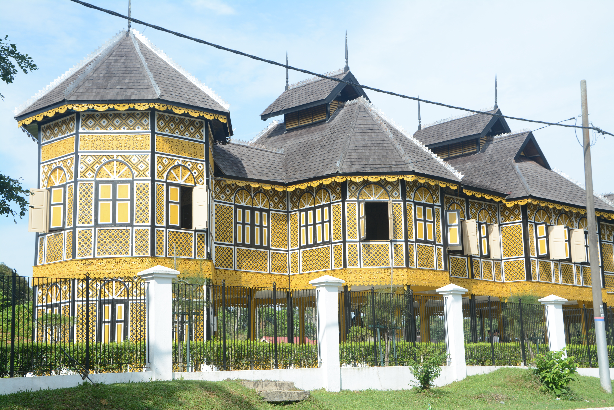

AI Motif Recognition
Upload or drag a carving photo to identify the motif and confidence score.
Click to upload or drag an image here
Supports JPG, PNG, and WEBP formats

Visual recognition of traditional Malay wood carving patterns and terminology retrieval powered by AI.
Upload or drag a carving photo to identify the motif and confidence score.
Click to upload or drag an image here
Supports JPG, PNG, and WEBP formats
Catalogued digital corpus of traditional ornamental carving motifs.
Typical positions of traditional wood carvings on heritage structures in Perak.
Positioned above windows or door lintels for natural airflow and lighting while maintaining indoor privacy.
Ornamental support pillars and brackets beneath roof edges that enhance the exterior architectural aesthetic.
Fascia boards along roof eaves and gable ends carved with continuous motifs to shield structural timber from weather exposure.